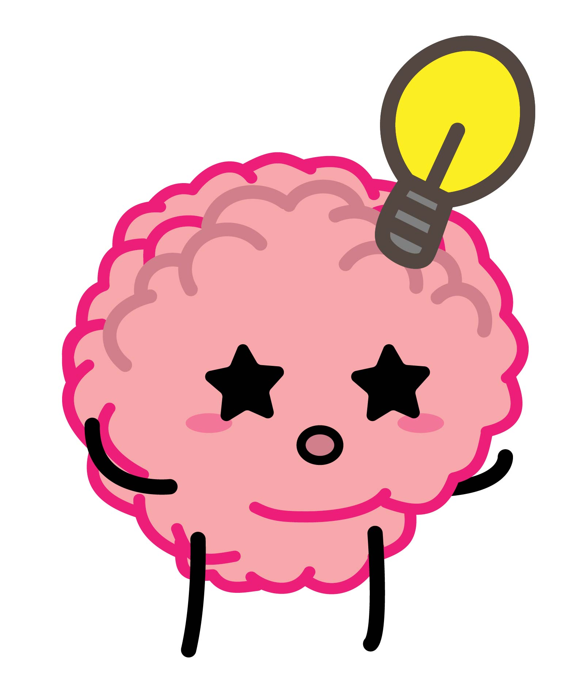
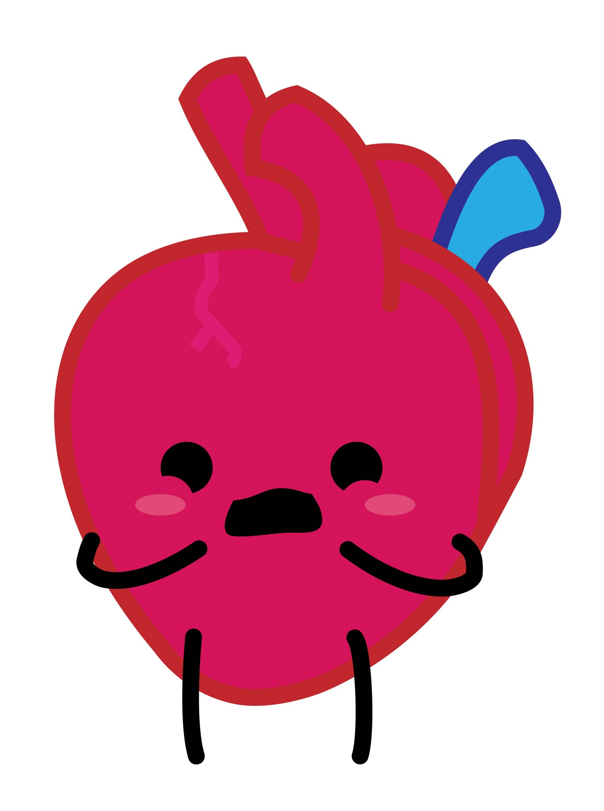

Hustle Hustle
Use Your Muscle A learning tool for kids!
Use Your Muscle A learning tool for kids!

Meet Our Characters
|  | Brain is a really clever organ that always works creatively to solve problems for his friends. When he comes up with an idea, his eyes light up and a lightbulb flashes over his head. Sometimes Brain gets lazy when he hasn't eaten breakfast or been watching TV all day. His favorite foods are blueberries, salmon steaks, and eggs. |
| Heart can sometimes be an emotional trainwreck. He easily gets anxious and nervous all the time! Heart does his best to make sure that no one gets their feelings hurt, and always tries to help others out. Heart's favorite things include making new friends, breathing exercises, and listening to music. |  |
| Muscle is the most hardworking one of them all. Muscle does his best to motivate Brain to stop being lazy and always does an excellent job of calming down Heart when he's having an anxiety attack. However, Muscle can sometimes rush into situations, especially if he doesn't ask Brain for advice first. |